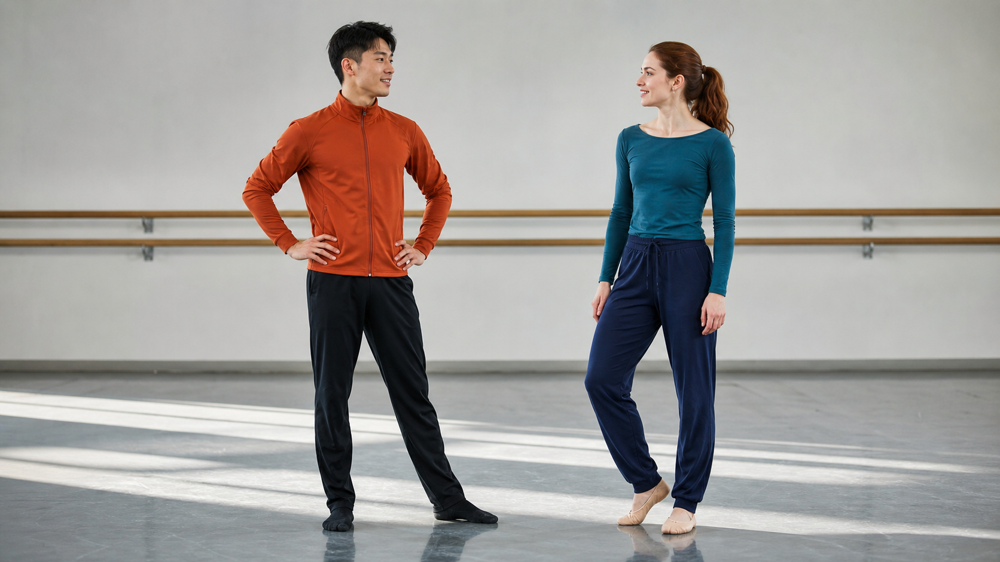
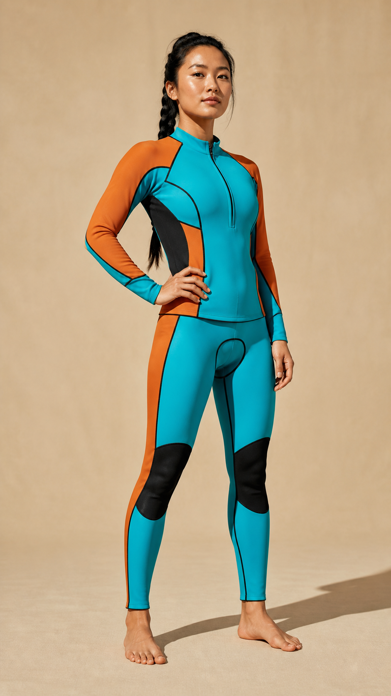
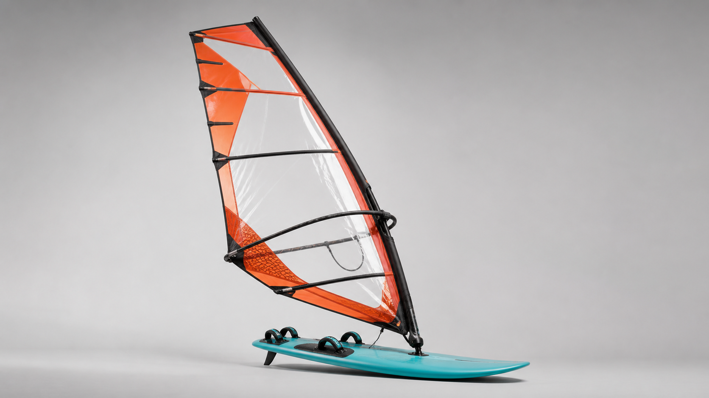
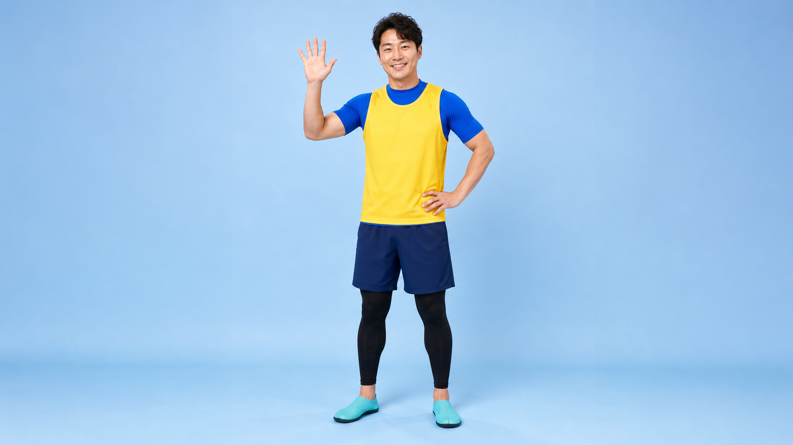

把它当成失败诊断手册与策略词典，不要当成“填写字段即可稳定生产”的模板库。
6 份案例 README + 6 份完整 Prompt + 部分媒体资产。
作者经验突破策略与结果描述，尚无重复率或 A/B 数据。
研究推断网页中的能力模型与扩展优先级。
00 / FINAL VERDICT · STAGE ARCHIVED
研究问题已经回答。
六种策略各完成一次真实外部生成、输入输出对照、画面与声音检查。结论足以指导是否使用，但不代表多次复跑后的稳定成功率。
- 真实外部输出
- 6 / 6
- 可直接判为完全成功
- 0
- 本轮最佳总体效果
- CASE 006
- V2 修复稿待验证
- 2
身份保留，遮挡长镜头未完成
15 秒内三次环绕与两次交接过载，空间路径和遮挡量化不足。
双脚全程不可见
“全身动作”与“腰上近距镜头”直接冲突，3:1 比例根本无法观察。
结构执行，审美目标变差
身份与姿态顺序保持，但微型飞行退化为人体扫描和长时间定格。
参考分工有效，装备物理失败
人物、帆板与摄影风格进入成片，手—杆—板接触关系仍不稳定。
节点出现，不等于故事成立
对白和多数节点可见，但机关启动到落水的连续因果链断裂。
贴纸效果最完整，仍有小偏差
单主体、单参考职责和短因果链更匹配模型；盐罐盖子仍违反约束。
- 先用一句话锁定唯一核心结果。
- 只抽取相关的 1–3 个控制原语。
- 让 AI 按具体素材轻量改写，不继承完整模板。
- 检查可观察性、时长密度和语义冲突。
- 外部生成后保留原始输入、Prompt 与失败证据。
- 一套可按症状查找的生成失败模式词典。
- 参考职责、物理路径、时间比例、锁定 / 放权等控制原语。
- 输入与输出并列、失败结果不覆盖、修复稿先标待验证的研究规范。
- 判断生成式 AI 仓库是否值得产品化的证据门槛。
01 / CAPABILITY MAP
它真正沉淀了什么？
六个案例看似题材不同，本质都在解决同一件事：如何把审美意图翻译为可维持的生成规则。
参考图职责分离
为每张图声明“控制什么 / 不控制什么”，避免身份、环境、装备与构图互相争夺。
图 1
身份+图 2
装备+图 3
摄影
身份+图 2
装备+图 3
摄影
连续物理逻辑
不只禁止切镜，还描述遮挡、绕行、惯性与下一主体如何从真实空间中出现。
时间与比例锚点
用 3:1 动作数、毫秒笑点、音乐重音和分段时间线代替“更快”“更有节奏”。
锁定 / 放权预算
精密镜头写清物理细节；综艺表演只锁故事节点，并明确授权模型决定执行。
身份级媒介保护
把“2D 平面”等关键属性写入角色身份，用封闭式否定清单对抗强道具先验。
02 / INTERACTIVE LAB
历史策略实验台。
保留用于理解六种控制结构和复盘当时的 V1。它不会调用 H3 或上传素材，也不再作为“可直接复制”的生产默认值。
三人遮挡衔接环绕长镜头
让三个人在同一空间里依次完成近距离环绕，并用人物身体形成前景遮挡，物理地揭示下一位主体。
默认失败
“去往下一个人”被模型理解为切镜、瞬移、交叉淡化或身份变形。
突破策略
不描述飞向谁，而是描述镜头绕过肩膀、头发或背部，让下一个人从遮挡后自然出现。
Prompt anatomy
结构拆解参考职责
时间 / 事件轴
生产 Prompt 设计器
填写你的项目，套用当前策略，生成可粘贴到 H3 的六段式 Ref2VA Prompt。
归档提示
这里生成的是历史 V1 结构稿。后期应先确定唯一目标，再让 AI 只抽取相关策略、删除无关检查项并消除镜头与动作冲突；不要把六段式完整当作质量保证。
编辑与预览语言
中文理解版：用于阅读和修改；英文生产版更符合官方写作规范。
正在检查
阅读上游完整案例 ↗
证据：README + Prompt，未附结果媒体
03 / 6 VERIFIED OUTPUTS · 0 PLACEHOLDERS
六份真实结果，
没有待测占位。
CASE 001–006 均已接入外部返回的真实有声成片，并保留输入、通过项和偏差证据；失败样本不会伪装成成功案例，待验证修复稿也不会覆盖原始 V1。
REAL EXTERNAL OUTPUT · CASE 001
身份基本保住了，
身份基本保住了，
遮挡衔接失真。
使用三张本站输入图与当时的英文生产 Prompt，在外部 MiniMax H3 以 15s / 768P / 16:9 生成。原始 MP4 与三张输入图均保留，以下判断来自逐秒抽帧和转场邻帧，而不是只看最终合影。
观察通过
三人的脸、发型与黑色西装 / 钴蓝夹克 / 米白连衣裙均可辨认；画廊环境和光向基本统一；未检测到明显硬切，MP4 含连续双声道音轨。
观察偏差
下一人物会在遮挡完成前提前入画，第二、第三人物没有分别完成清楚的独立环绕；镜头更像人物依次从前景走过，并过早进入多人同框。
归因判断 · PROMPT CONTRIBUTED MATERIALLY
是，提示词设计对失败有明显贡献，但不是“模板格式”本身导致。主要问题是把三次完整环绕、两次交接和最终合影塞进 15 秒，同时没有规定人物站位、遮挡必须覆盖多少画面，以及下一人物何时才允许出现。
下一轮应改成三段约 90° 的短弧线，不再要求三次完整环绕；在两次交接中让肩膀或背部覆盖至少 90% 画面，并明确“未来人物在各自揭示点之前完全位于画外”。即使这样，三身份 + 单镜头 + 精确遮挡仍属于模型的高难任务，需要重复测试。
适用场景 · USE CASES
它的价值不是普通三人合影。
核心价值是把三张独立人物参考图中的三个人带入同一空间，用一次连续镜头建立明确的出场顺序和人物关系。
适合优先尝试
- 时尚群像 / Lookbook：让三套造型依次登场，最后形成同框阵容。
- 影视、游戏角色预告：用连续运镜完成主角团或阵营成员介绍。
- 团队与品牌片头：让成员、代言人或虚拟角色获得有顺序的登场仪式。
- MV 与能力测试：用音乐节拍驱动交接，或评估多身份、遮挡和长镜头稳定性。
不建议优先使用
如果只需要最终三人合影，直接生成群像会更简单、更稳定；长对白、复杂打斗或手部互动、必须商业级精确还原真人，以及允许常规切镜的内容，也不值得承担“三身份 + 单镜头 + 精确遮挡”的额外难度。
3 INPUTS → OUTPUTEXTERNAL H3 · WITH AUDIO
 SUBJECT_A + ENV
SUBJECT_A + ENV
 SUBJECT_B
SUBJECT_B
 SUBJECT_C
SUBJECT_C
输出 · H3 VIDEO
REAL EXTERNAL OUTPUT · CASE 002 · FAILED TEST
画幅没坏，
V2 轻量修复稿 · READY TO TEST · NOT YET VERIFIED
01 · 固定全身景别
02 · 一个动作单位
03 · 只测一次 3:1
04 · 声音成为计数证据
画幅没坏，
测试本身失效了。
使用本站 Picture 1 与当时的 V1 英文生产 Prompt，在外部 MiniMax H3 以 12s / 768P / 16:9 生成。下载文件本身没有预览中的模糊侧边和平台水印；真正的失败是全片没有展示双脚，因此无法判断蝴蝶步，更无法验证 3:1 动作比例。
观察通过
原始 MP4 是正常 16:9，模糊侧边和 @ChatArt 水印没有写入文件；两人的身份、橙色 / 蓝色服装、初始左右位置和排练室环境基本稳定；双声道音轨存在。
观察偏差
每 0.5 秒抽样一次的 25 个画面全部裁掉双脚；人物主要做腰部以上的小幅摆动与行走，无法计数蝴蝶步；约 3.21 秒和 9.71 秒出现明显切镜，违背同一连续镜头要求。
测试条件 → 实际执行 · TEST CONDITION → OBSERVED
双脚可见：0 / 25 个均匀抽样画面显示完整双脚，核心动作没有进入证据范围。
第一次构图：腰部 / 大腿以上双人中景，以对视和手臂摆动为主。
第一次切镜：机位与人物尺寸突变，连续镜头条件失效。
主体动作：仍然看不到鞋与落脚点，不能确认快者三周期、慢者一周期。
第二次切镜：再次改变构图；结尾也没有提供可数的 3:1 完成状态。
归因判断 · PROMPT CONTRADICTION INVALIDATED THE TEST
这是当前模板生成层的低级语义冲突，不应先归咎于模型。V1 一处要求“清晰全身动作”，另一处却要求“膝盖或腰部以上的近距离环绕、避免远景”。后者更具体，模型据此裁掉了双脚；现有网页校验器只确认六段齐全、时长有效和参考职责存在，没有检查摄影是否能展示核心动作。
模型没有形成清楚差速仍是第二层失败，但在双脚不可见时，测试已经失去判定基础。V2 因此不继续往完整模板中追加否定句，而是改成一个固定全身镜头和一个可数动作单位。
先保证动作可见，再讨论 3:1 是否执行。
V2 是下一轮可直接外部调度的专用测试稿，不沿用原来的完整六段式模板；上方视频仍只对应失败的 V1，V2 在新成片返回前不能宣称有效。
12 秒只用一个三脚架全身双人镜头，头顶到鞋底持续入画，每只鞋下方必须看到地板。
把一个周期定义为“左脚外迈 → 右脚后交叉 → 右脚返回 → 左脚合拢”，避免用抽象的快慢形容词。
快者完成且只完成三个周期；慢者观察后完成且只完成一个慢周期，不再叠加环绕与第二轮剧情。
取消音乐，左侧产生三组快速鞋声、右侧产生一组慢速鞋声，声音组数必须对应画面周期。
- 固定全身双人构图，四只鞋全部可见
- 快者周期 1；慢者保持静止并观察
- 快者周期 2；慢者开始唯一慢周期
- 快者周期 3；慢者完成唯一慢周期
- 自然停稳，不增加动作，不形成同步结尾
查看 V2 中文理解版完整内容
正在载入中文修复 Prompt…
查看 V2 英文生产版完整内容
Loading English production Prompt…
{kind=link}
INPUT → FAILED V1 OUTPUTEXTERNAL H3 · WITH AUDIO
输入 · PICTURE 1

输出 · V1 FAILED TEST
REAL EXTERNAL OUTPUT · CASE 003
结构通过了，
结构通过了，
飞行感没有。
使用本站三张姿态图与当时的 V1 英文生产 Prompt，在外部 MiniMax H3 以 15s / 768P / 9:16 生成。它成功避免了身份切换和幻灯片，但实际观感更像低机位的人体扫描与姿态巡检，而不是微型摄影机高速飞行。
观察通过
同一张脸、灰黑短发、酒红外套、黑裤和短靴全程稳定；三个姿态按起始 → 过渡 → 英雄姿态依次出现；相邻帧显示动作和摄影机连续，没有发现身份变形、淡化或明确硬切。
观察偏差
前约 5 秒被贴近鞋、腿和手的低位动作占满，人物为了配合镜头长期蹲低；缺少能证明“微型尺度”的穿越门洞、遮挡物和强视差；约 10.4 秒进入英雄姿态后，人物基本保持到结尾，只剩一次突兀的贴脸推拉。
提示词时间线 → 实际执行 · EXPECTED → OBSERVED
低位进入：从全身迅速靠近靴子，起始姿态只承担入口。
鞋与手近景：镜头持续贴地，人物蹲低伸手，更像配合摄影的人体扫描。
过渡姿态：人物起身并经过 Picture 2，摄影机普通上升跟随，缺少高速绕行。
转向英雄姿态：转身举臂进入 Picture 3，顺序正确但变化很短。
英雄停留：人物大部分时间静止；约 12.7 秒贴脸再退回，无法替代持续飞行路线。
归因判断 · TEMPLATE GOAL PASSED / AESTHETIC GOAL MISALIGNED
你的判断成立：以“成片是否更好看”为标准，这套默认模板确实可能不如不套模板。它原本解决的是“三张姿态不要变成三页幻灯片”，所以把鞋、手、身体近距绕行、三个姿态路标和最终英雄画面全部写成检查项。模型保住了检查项，却把表演压缩成“蹲下 → 伸手 → 起身 → 举臂”。
三张输入本来就是同一人物、同一服装、同一空间，身份和场景风险并不高；此时继续堆叠微型摄影机、厘米级贴近、频繁避让和姿态锚点，会让镜头任务凌驾于叙事与动作。模板不是普遍增强器，它只适合对应失败模式；目标从“避免幻灯片”变成“做一条好看的动作短片”后，应重新设计任务，而不是默认沿用全部模板规则。
下一轮选择 · TWO DIFFERENT GOALS
先决定要好看，还是要验证微型飞行。
优先追求成片效果
不套完整模板。三张图只提供身份和动作灵感，改用一个连续舞蹈目标、三次明确镜头节拍和一个情绪高潮；删除厘米级身体扫描、姿态逐项打卡与长时间英雄停留。
专门验证微型飞行
保留策略，但必须加入可见尺度门槛：从靴底与地面缝隙穿过、绕过外套下摆、穿过肘部与躯干形成的窗口，并限制任何姿态停留不超过 0.4 秒。
{kind=link}
{kind=link}
{kind=link}
3 POSE INPUTS → OUTPUTEXTERNAL H3 · WITH AUDIO
输出 · V1 H3 VIDEO
REAL EXTERNAL OUTPUT · CASE 004
参考分工生效，
参考分工生效，
装备物理仍漂移。
使用本站三张输入图与当时的 V1 英文生产 Prompt，在外部 MiniMax H3 以 15s / 768P / 9:16 生成。它证明“人物 / 装备 / 摄影”分岗可以控制整体视觉，但不能自动保证帆板的细部运动学。
观察通过
青橙运动服、深色束发、橙色帆和青色板均稳定可辨；低水位、逆光、大浪与喷雾明显继承摄影参考；音频能量在约 10 秒显著抬升，和提示词要求的主峰值基本一致。
观察偏差
人物始终较远，无法严谨核验脸部身份；横杆多次变成不合理的环状结构，手—杆关系与帆内外层级不稳定；约 8–11 秒板头呈悬浮式抬升，装备更像视觉变形而非可解释的帆板动作。
参考岗位 → 实际执行 · ROLE → OBSERVED
人物：服装配色、体型与发型进入成片；远景比例使脸部相似度无法可靠判断。
装备：帆与板的颜色、轮廓大体保留；横杆、桅杆连接和脚部接触发生结构漂移。
摄影：贴近水面的广角逆光最稳定，说明摄影图没有明显污染人物或装备外观。
镜头：约 3.92、9.67、12.71 秒出现明显切换，结果是四镜头运动时尚剪辑，并非一条连续 carve。
声音：立体声音轨连续、未检测到对白或歌声；信号分析能确认 10 秒能量峰值，不能单独证明每一种风浪与器材声都准确同步。
归因判断 · ROLE ARCHITECTURE WORKS / KINEMATICS UNDER-SPECIFIED
这次不能简单归结为“套模板失败”。模板最核心的参考职责分离已经生效，粗粒度视觉结果是成功的；问题出在 V1 只写了“保持可信的手、横杆、帆、板与站姿”，却没有把可信拆成逐帧不可破坏的接触规则。
下一轮应明确：双手始终抓住同一根连续横杆；桅杆脚连接点固定在板面；非腾空动作中板底持续受水面支撑；脚不穿过板面或帆；摄影图只控制高度、焦段与光向，不复刻同一构图。即使补齐这些规则，复杂装备几何和水体受力仍是视频模型的能力边界，需要多轮抽样验证。
{kind=link}
{kind=link}
{kind=link}
3 ROLE-LOCKED INPUTS → OUTPUTEXTERNAL H3 · WITH AUDIO
PICTURE 1

IDENTITY / OUTFIT PICTURE 2
RIG CONSTRUCTION PICTURE 3CAMERA LANGUAGE
输出 · V1 H3 VIDEO
REAL EXTERNAL OUTPUT · CASE 005
节点基本都有，
V2 修复稿 · READY TO TEST · NOT YET VERIFIED
01 · 缩减剧情
02 · 锁定因果镜头
03 · 分层放权
节点基本都有，
因果链断了。
使用本站 Picture 1 与当时的 V1 英文生产 Prompt，在外部 MiniMax H3 以 15s / 768P / 16:9 生成。视频完成了多数剧情节点和三句普通话，但“机关为什么导致落水”没有被画面证明。
观察通过
人物身份与黄蓝运动服基本可辨认；问候、滚筒打滑与恢复、爬高墙、水花、出水反应均有出现；三句普通话按预定顺序可识别，MP4 含连续双声道音轨。
观察偏差
滚筒通过与鱼骨摔倒被合并成一次滚筒摔倒；侧面机关没有清楚启动或接触人物；约 11.9 秒从爬墙直接切到水花，缺少“机关 → 接触 → 失衡 → 入水”的连续物理证据。
预期 → 实际 · EXPECTED → OBSERVED
开场问候：完成，但占用接近四秒。
滚筒 + 鱼骨：被压缩为滚筒上的一次摔倒和恢复。
高墙假胜利：基本完成，人物接近墙顶。
机关反转：未形成可读触发，画面直接跳到水花。
出水笑话：完成，湿发反应和结尾对白可辨认。
归因判断 · PROMPT / TASK DESIGN IS PRIMARY
这次主要不是模板框架错，而是把默认模板直接当成了最终导演稿。V1 在 15 秒里安排 7 个剧情节点和 3 句对白，同时把动作、机位与剪辑节奏广泛放权；它要求“出现机关反转”，却没有定义机关在哪里、如何接触人物，以及必须用什么镜头证明落水原因。
模型于是用最省时的办法保住节点清单：合并两个障碍、省略机关过程，再用切镜跳到水花。H3 的执行方差仍然存在，但本次首先应修复任务密度、空间几何、因果镜头和放权边界。
不是继续堆细节，而是锁定关键因果。
V2 是下一轮可直接调度的生产稿，尚未得到外部 H3 成片验证；上方视频仍只对应 V1，二者不会混为同一份证据。
从 7 个节点减为 5 段，只保留滚筒和高墙机关，删除独立鱼骨障碍。
机关启动、接触、失衡、空中轨迹和入水必须在同一条侧面大全景内连续可见。
只放权细小步法、表情和观众反应；障碍数量、空间、触发方式、对白和时间窗全部锁定。
- 开场问候
- 穿越四根滚筒，打滑但恢复
- 爬高墙，形成“即将成功”
- 机关接触到入水，全程禁止切镜
- 出水、看镜头、说结尾笑话
查看 V2 中文理解版完整内容
正在载入中文修复 Prompt…
查看 V2 英文生产版完整内容
Loading English production Prompt…
{kind=link}
INPUT → V1 OUTPUTEXTERNAL H3 · WITH AUDIO
输入 · PICTURE 1

输出 · V1 H3 VIDEO
REAL EXTERNAL OUTPUT · CASE 006
柠檬贴纸样例，
柠檬贴纸样例，
真实成片已返回。
使用本站提供的 Picture 1、英文生产 Prompt 与 10s / 768P / 16:9 参数，在外部 MiniMax H3 生成。这里展示的是返回的原始 MP4，不是页面模拟动画。
观察通过
倒盐、轻敲、喂食和星星倒下均可辨认；角色保持平面贴纸观感；MP4 含连续双声道音轨。
观察偏差
盐罐旁仍出现圆形盖子，说明“场景任何位置都不存在盖子”的封闭式否定未完全生效。
INPUT → OUTPUTEXTERNAL H3 · WITH AUDIO
输入 · PICTURE 1

输出 · H3 VIDEO
04 / UPSTREAM OUTPUT
仓库中唯一附带的成片证据。
案例 004 提供了 4 张参考图与 1 个结果视频。README 描述的生产方案是 3×15 秒、45 秒成片，但附件在浏览器中的媒体时长约为 36 秒；仓库也没有同时保存失败版本、生成参数或重复测试，因此它是案例证据，不是性能基准。
源码事实
打开上游成片 ↗
媒体直接从固定提交读取，不复制进本研究库。若预览失败，可前往上游文件。
CASE 004ATTACHED FILE · ≈36S
05 / WHERE IT FITS
什么时候值得打开这个仓库？
它更像一本“故障模式手册”，适合遇到具体生成问题时按症状查策略，而不是从空白需求一键出片。
精密连续镜头
多人物环绕、姿态间连续飞行、需要可解释的镜头物理。
从 CASE 001 / 003 开始差速与时间节拍
双人不同步、音乐峰值、毫秒级笑点或明确事件顺序。
从 CASE 002 / 004 / 006 开始综艺与自然表演
剧情必须可控，但具体动作、机位和反应需要保留即兴感。
从 CASE 005 开始媒介与道具先验
2D 角色进入真人世界，或某种道具默认形态会破坏剧情。
从 CASE 006 开始
不适合直接承担
一键生成平台 · 定量模型基准 · API 批处理 · 自动回归测试 · 团队模板管理
06 / EVIDENCE AUDIT
有启发，
但还不是基准。
结构与资产
六套 README/Prompt、MIT 许可证、部分参考图，以及 CASE 004 的结果视频。
策略有效性
比例、命名语法、身份级媒介锁与显式放权改善了对应结果。
稳定性与泛化
缺少模型版本、种子、参数、失败输出、重复成功率和 A/B 对照。
07 / EXTENSION ROADMAP
什么情况下值得重启？
当前不继续堆题材。只有新的模型版本、重复生成能力、严格 A/B 对照或自动评估工具到位，复研才会增加证据强度。
- R1版本触发
模型发生显著变化
MiniMax H3 或参考视频模式升级，旧结论可能失效，需要运行固定回归案例。
- R2证据触发
能够重复生成
相同输入和参数至少复跑多次，开始计算成功次数与模型方差。
- R3方法触发
能够严格 A/B
用同一素材比较自由提示词、轻量定制稿与完整模板，而不是比较不同题材。
- R4能力触发
评估工具到位
具备抽帧、镜头边界、身份一致性和动作计数等可重复指标，再考虑产品化。
SOURCES